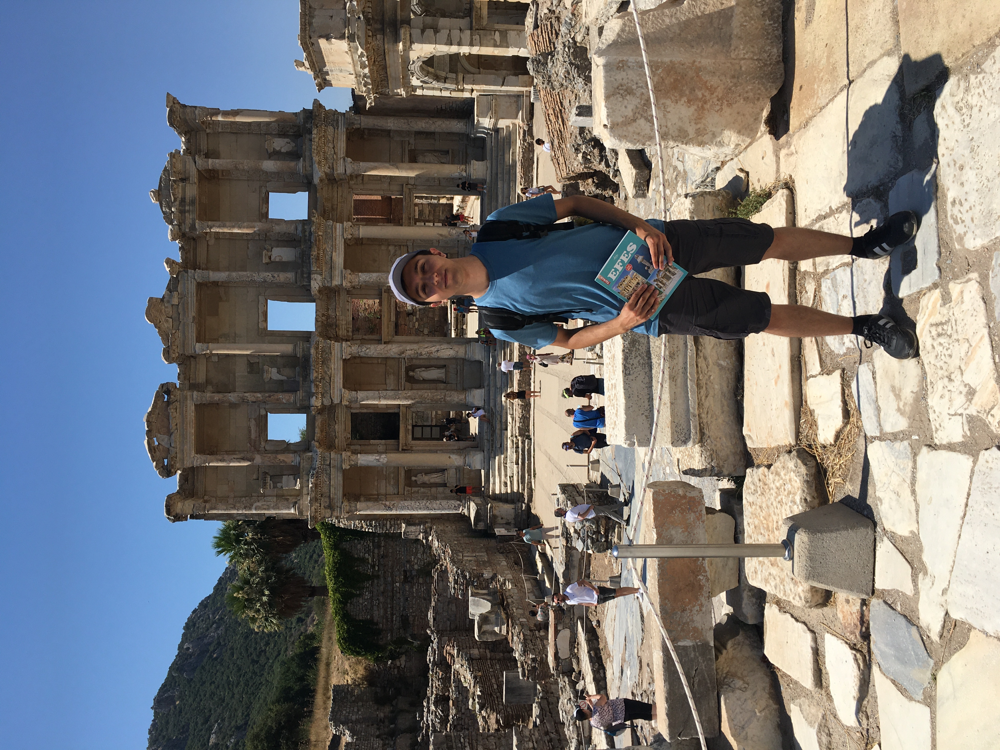
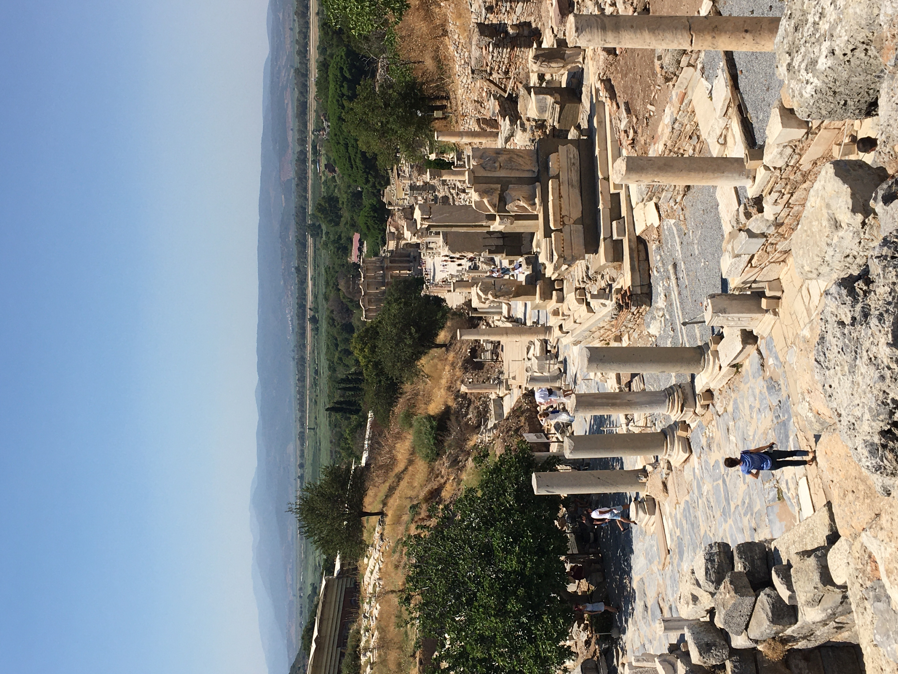

← Back to Beyond Research Sites Visited Turkey Aspendos Ephesus (Efes) Metropolis  In front of the Library of Celsus, Ephesus (July 2020).  Curetes Street, looking down toward the Library of Celsus. Museums Reading & Resources